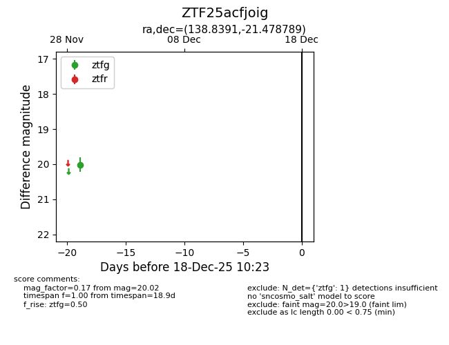
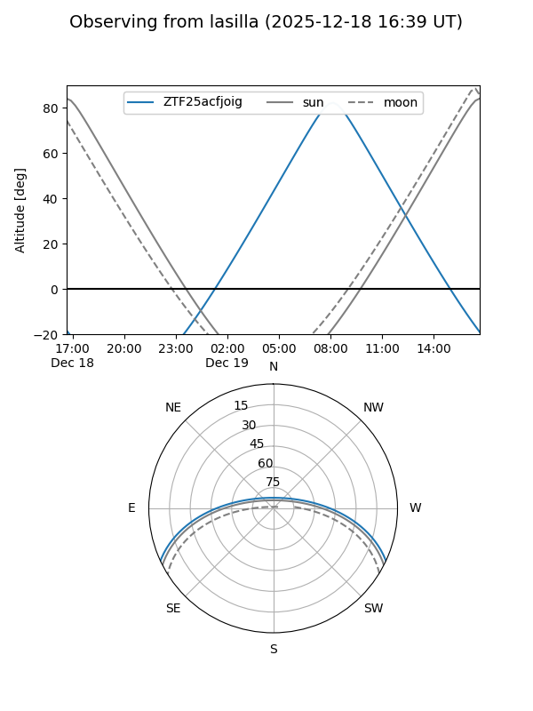
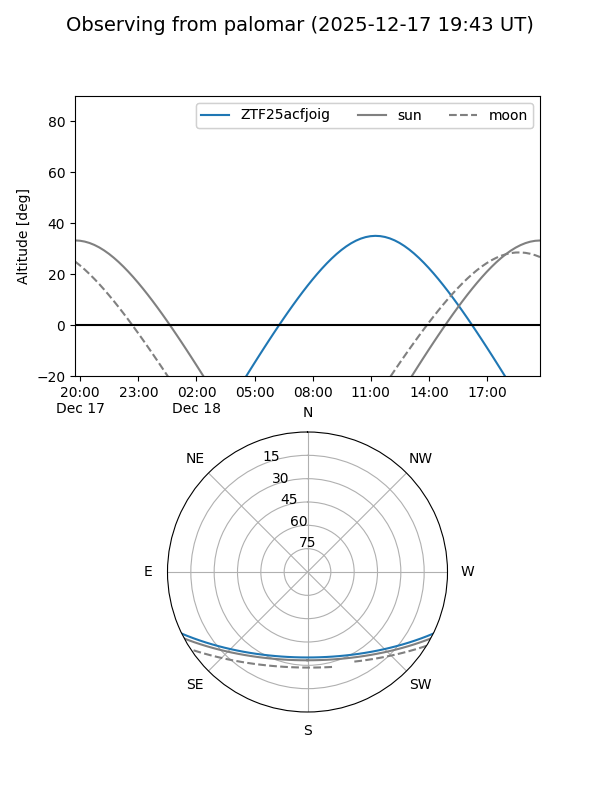

ZTF25acfjoig
Target ZTF25acfjoig at 2025-12-18 11:17
Aliases and brokers:
FINK: fink-portal.org/ZTF25acfjoig
Lasair: lasair-ztf.lsst.ac.uk/objects/ZTF25acfjoig
ALeRCE: alerce.online/object/ZTF25acfjoig
alt names
ZTF25acfjoig (ztf,fink_ztf)
Coordinates:
equatorial (ra, dec) = 138.8391,-21.47879
equatorial (HMS+DMS) = 09:15:21.37,-21:28:43.64
galactic (l, b) = (250.3044,+18.63828)
Photometry
last ztfg=20.02
1 ztfg detections
Lightcurve

Visibility


Additional plots